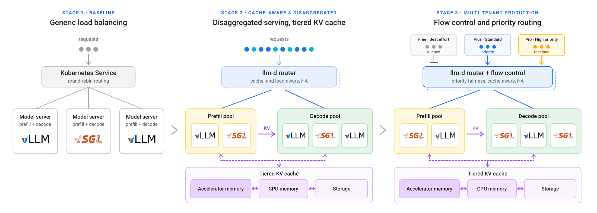
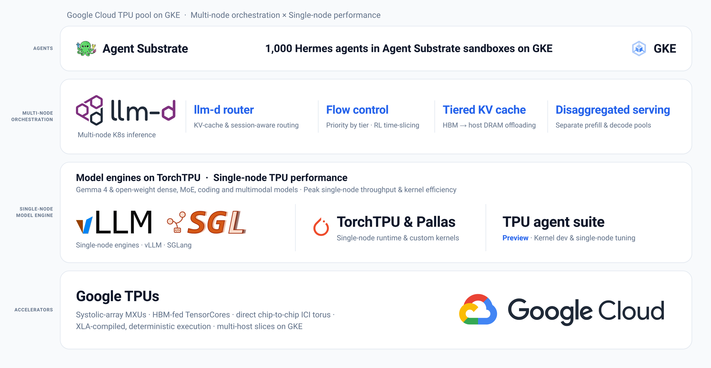

一年前，大部分推理流量还是聊天：一个提示进去，一个回答出来。现在越来越多的请求来自多步智能体和强化学习的 rollout，它们会在多个工具之间展开、共享很长的前缀、成批突发到达。把这类流量放在单台机器上，或者放在普通的轮询负载均衡后面，各个副本会重复计算同样的提示，显存里堆满重复的 KV cache，一个突发的智能体循环还会把交互用户的请求卡住。Google 联合 Red Hat、IBM 等在 PyTorch Conference 上发布的 llm-d 1.0，是一个跑在 Kubernetes 上的开源分布式推理栈，它把一组 vLLM、SGLang 模型服务器组织成一个统一的服务池：路由器知道每段缓存前缀在哪些副本上，把同一会话的请求送回去；显存不够时把 KV cache 挪到主机内存和存储；高优先级请求可以插队。在 Ironwood TPU 的编码智能体负载上，前缀感知路由加主机内存卸载让首 token 延迟（TTFT）中位数下降 85% 以上，总吞吐是普通 Kubernetes Service 的 2.4 倍。这些收益大多不靠更快的算子，靠的是不再重复计算已经算过的前缀。
这篇是 Google Cloud 的产品博客，配合 IBM Research 同日的介绍一起读。下文先讲 llm-d 解决的问题，再拆路由、KV cache 分层、预填充与解码分离、流控四个部件，最后看博客给出的生产数据。数字全部来自这两篇博客，大部分没有完整的实验设置。
1. 问题：智能体流量为什么让普通负载均衡失效

llm-d 的三个演进阶段（Google 博客 Figure 1）。左边是普通的 Kubernetes Service，按轮询把请求分给各个同时做预填充和解码的模型服务器；中间加入感知缓存和负载的路由器，预填充池和解码池分开，KV cache 分成显存、CPU 内存和存储三层；右边在路由器上加了流控，按免费、标准、高优先级三个档位排队。看从左到右多出来的部件，就是 1.0 相比普通部署多做的事。
大模型推理分两步：预填充把整段提示读一遍，算出每个 token 的 KV cache；解码再基于这些缓存逐个生成新 token。预填充的计算量随提示长度增长。一个智能体在一个任务里会多次调用模型，每次的提示都包含同样的系统指令、代码和历史对话，只在末尾多几轮新内容。
如果第二次调用被轮询分到另一个副本，这个副本没有前一次的缓存，只能把整段前缀重新预填充一遍。副本越多，命中原来那台的概率越低。IBM 的博客把这件事说得很直接：如果每一步都要让模型重读同样的材料，就是在为已经做过的工作反复付费。
第二个问题是混合负载。交互请求要求低延迟，后台智能体循环和强化学习 rollout 要的是吞吐，需求还按分钟波动。没有优先级时，交互请求会排在一大批后台请求后面。
2. 方法：四个部件
缓存感知路由。 llm-d 的路由器建立在 Kubernetes 的 Gateway API Inference 扩展之上。它记录每段缓存前缀存在哪些副本上，选副本时同时考虑这个信息、副本负载和预测延迟。1.0 增加了会话感知路由和按轮次的优先级调度，并在路由层原生保存 Responses API 的状态，让智能体跨轮次复用上下文。IBM 的说法是，多轮请求会固定在合适的副本上，让前缀缓存保持可用。
KV cache 分层卸载。 显存满了以后，llm-d 不直接丢弃旧缓存，而是通过 vLLM 的 OffloadingConnector、Mooncake 或 SGLang 的 HiCache 把它挪到主机内存，再往下挪到 SSD 或 Google Cloud Managed Lustre。作用是避免在多轮、长上下文负载下大量前缀被同时挤出显存，之后又集中重算，博客把这种现象叫作前缀驱逐风暴。
预填充与解码分离。 预填充是计算密集的，解码受显存带宽限制，两者放在同一批副本上会互相等待。llm-d 把预填充、解码和多模态编码分成独立的池，用宽专家并行把大的 MoE 模型分布到多个节点上。1.0 新增的 DisaggregatedSet 建立在 Kubernetes 多主机推理 API LeaderWorkerSet 之上，把这几个池当作一个整体管理：滚动升级时预填充和解码一起换到匹配的版本，扩缩容仍然各自独立。
流控和异步处理。 流控按优先级和公平性给请求排队，让延迟敏感的请求和突发的智能体负载共享一批硬件，又不互相饿死。1.0 还加了 llm-d-async-processor，从 Pub/Sub 或 Redis 这类队列里拉取不着急的请求，和实时流量一起路由，只用空闲容量来跑，并执行严格的优先级通道和配额。

Google Cloud 上的完整栈（Google 博客 Figure 2）。从上往下依次是：Agent Substrate 沙箱里运行的 1,000 个智能体；llm-d 的多节点编排层，包括路由器、流控、分层 KV cache 和预填充/解码分离；单节点模型引擎 vLLM、SGLang 和 TorchTPU；最下面是 TPU 硬件。看中间两层的分工：llm-d 只负责跨节点的调度，单节点性能交给推理引擎。
这张图也说明了 llm-d 的定位。它不替换 vLLM 或 SGLang，而是放在它们前面做调度。团队可以保留现有的推理引擎、模型和集群，只挑需要的部件接上，博客建议的顺序是先在现有 vLLM 部署前加前缀感知路由，再加流控、KV cache 卸载和预填充/解码分离。
3. 1.0 版本新增了什么
IBM 的博客指出，前缀缓存感知路由、KV cache 卸载、批量推理优化、预填充/解码分离和宽专家并行这五项技术在 1.0 之前就有，1.0 的变化在于让它们能作为关键服务长期运行。具体包括：
- 多租户服务质量：按优先级和公平性的流控。
- 稳定性：v1 版 API 和加固过的请求路径，在多个云和多种加速器上验证过。
- 安全升级：路由器高可用、零停机更新，以及上面说的 DisaggregatedSet。
- 面向智能体的服务：会话感知路由、按轮次的优先级调度、原生 Responses API 状态。
- TPU 支持：TorchTPU 让 PyTorch 模型在 vLLM 和 SGLang 里原生跑在 TPU 上，并支持协作式时间分片。
时间分片针对的是强化学习训练里的空闲。博客说，在生成 rollout 或更新权重的阶段，加速器有 40% 到 60% 的时间是空闲的；llm-d 把异步推理塞进这些空档，把加速器的总体占用率从约 40% 提到 70% 以上。
4. 实验和生产数据
博客给出的数据分两类：Google 自己的测试和生产流量，以及用户的反馈。每组数据都只给了对比对象和结果，没有给完整的实验配置，下面按“想证明什么、和谁比、结果”整理。
| 场景 | 对比对象 | 结果 |
|---|
| Ironwood TPU（TPU 7x）上的编码智能体负载，前缀感知路由 + 主机内存卸载 | 普通 Kubernetes Service | TTFT 中位数下降 85% 以上，总吞吐 2.4 倍 |
| Gemini 平台（原 Vertex AI）生产流量，经 GKE Inference Gateway | 博客未写明 | 前缀缓存命中率从 35% 到 70%；编码智能体 TTFT 下降 35% 以上；突发聊天流量下 P95 TTFT 下降 50% 以上 |
| 17,000 节点、跨美欧多区域的 GKE 部署，服务一个 MoE 模型 | 博客未写明（结果按三个集群合计） | 三个集群吞吐扩展到 2.9 倍，成功率 99.9%，路由开销低于 1% |
| A3 Mega 集群服务 70B 模型，50k token 提示，KV cache 同时卸载到 Managed Lustre 和主机内存 | 只卸载到主机内存 | TTFT 改善约 40%，端到端延迟降低 30%，GPU 时长需求减少近 60% |
| 编码智能体负载测试（IBM） | 可复用缓存的上限 | 前缀感知路由拿到 97% 的可复用缓存 |
| 3,000 个软件工程智能体并发，自建部署（IBM 和 Red Hat） | 按服务购买同一开源模型 | 成本低 5 到 10 倍 |
第一行回答的是缓存感知路由本身能带来多少：同样的硬件，只把轮询换成按前缀路由并加上主机内存卸载，TTFT 中位数就下降了 85% 以上。第二行是生产流量上的验证，前缀缓存命中率翻倍，和 TTFT 的下降方向一致。第三行测的是规模，路由开销低于 1%，说明路由器自身的计算没有成为瓶颈。第四行对比两种 KV cache 卸载方案，在 50k token 的长提示下，多一层共享存储的效果更明显。
用户反馈里，Snap 用前缀缓存感知路由把命中率做到最高 75–80%；ZenteiQ 在每 1,000 张 TPU v6e 上的日生成 token 量从 14.7 亿提到 59.7 亿，总吞吐提高 4 倍以上；Mistral 用流控在不同商业档位之间执行严格的优先级，资源池饱和时自动挂起或丢弃低优先级请求。
5. 局限
博客本身没有讨论局限。补充两点事实：第一，表里的大部分数据只有对比对象和结果，基线配置、负载构成和测量方法要去博客链接的原始材料里核对；第二，很多能力（GKE Inference Gateway 托管路由、跨区域故障切换、Managed Lustre 存储层）是 Google Cloud 的托管服务，在其他云或自建集群上需要自己部署对应的开源部件。
6. 实践意义
- 如果线上用 vLLM 或 SGLang 服务智能体或多轮对话，而且前面还是轮询负载均衡，先查一下前缀缓存命中率。命中率低的话，按前缀路由是改动最小、收益最直接的一步。
- 交互请求和批量任务共用一批卡时，流控和异步队列可以让批量任务只用空闲容量，交互请求的延迟不受批量任务影响。